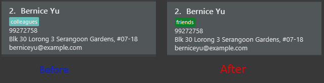
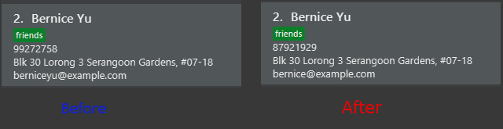

Project: Augustine
- Code contributed
-
Functional Code: [Main file] [Reused Code]
Test Code: [Main file] [Reused Code]
Enhancement Added: Modified How Edit Command Due With Tags
Tags now get toggled instead of being overwritten with what the user wrote.
Editing a contact: edit
The edit command modifies a contact in Augustine.
Format
The format of the edit command is as follows:
edit INDEX [n/NAME] [p/PHONE_NUMBER] [e/EMAIL] [a/ADDRESS] [b/BIRTHDATE] [insta/USER_ID] [t/TAG]…
You can also use the alias e instead of typing out edit.
|
| You cannot edit someone to have the exact same details as another contact. |
Examples
Here are some examples to guide you with editing contacts in Augustine:
-
Adding and removing tags
You can add or remove the tags to/from a particular contact using the
editcommand below (see Figure 6).Command: edit 2 t/colleagues t/friends-
Since Bernice was already tagged under "colleagues", this command removes the tag "colleagues" from Bernice.
-
Since Bernice was not already tagged under "friends", this command adds the "friends" tag to Bernice.
Figure 6. Before and after the command’s execution -
-
Changing phone number and email
You can change the phone number and email of a particular contact using
editcommand below (see Figure 7).Command: edit 2 p/87921929 e/bernice@example.com-
The command will change the phone number of Bernice to
87921929and her email tobernice@example.com.
Figure 7. Before and after the command’s execution
-
End of Extract
Justification
The user will not need to re-type all the existing tags when adding or removing just one.
Using NUSmods: nusmods
Augustine is integrated with https://nusmods.com.
You can use the nusmods command to add, edit or delete modules from a contact’s timetable.
Before adding modules to contacts, you will need to open config.json and enter the current academic year.
The config file can be found in the same folder as Augustine.
Format
The format of the nusmods command is as follows:
nusmods INDEX t/<add|delete|url> m/<MODULE_CODE|URL> [LESSON_TYPE/LESSON_SLOT]…
You can also use the alias nm instead of typing out nusmods.
|
| Most students in NUS use NUSmods, ask them for their timetable URL to save time populating Augustine! |
Example
Here are some examples of using the nusmods command:
-
Inputting timetable with URL
The following command will overwrite the timetable of the contact listed at index 1 with the timetable given in the URL. You can copy the URL from your friend and paste it into Augustine.
Command: nusmods 1 t/url m/https://nusmods.com/timetable/2017-2018/sem1?cs2101[SEC]=5&CS2103T[TUT]=T5&MA1101R[LAB]=B01&MA1101R[LEC]=SL2&MA1101R[TUT]=T13&CS2010[LEC]=1&CS2010[LAB]=6&CS2010[TUT]=5&GET1020[LEC]=L1 -
Adding or updating a module and its time slots
The following command will add the module
MA1101R's tutorial groupT13and lecture slotSL2to the timetable of the contact listed at index 2.Command: nusmods 2 t/add m/MA1101R lec/SL2 tut/T13 -
Removing a module from a contact
The following command will remove the module
CS2010from the timetable of the contact listed at index 2.Command: nusmods 2 t/remove m/CS2010
End of Extract
NUSmods integration
Each contact in Augustine can be contain a NUSmodules which stores all their modules and lesson slots.
Augustine utilizes https://nusmods.com to display through the browser. The current academic year and semester is set inside config.json
Implementation details
Timetables are stored in NusModules class and each Person will have a NusModules if they have a timetable.
NusModules uses a HashMap<String moduleCode, HashMap<String lessonType, String lessonSlot>> to store the modules.
nusmods Command
Modules are added, edited and deleted using the nusmod command.
The command will be phase by NusmodCommandParser and executed in NusmodCommand.
As NusmodCommand changes the AddressBook.xml, it will inherit from UndoableCommands.
A flag will be used to tell if the user wants to parse a url, add or delete a module.
The command nusmod 2 t/add m/CS1231 sec/2 tut/9 will modify the schedule of the second person in the list
by adding a module with the moduleCode CS1231 with the lessonType "sec" and "tut", with lessonSlot 2 and 9 respectively.
To edit, the same command is use, new lessonType and lessonSlot will overwrite previous data. To delete, nusmod 2 t/delete m/CS1231 can be used.
The diagram below shows how the command handles different flags.
Storing NUSmodules in the AddressBook.xml
To store in the AddressBook.xml, NusModules needs to be able to converted into XML format and back (see part in red border in class diagram below).
In the xml, the data will be stored as such:
<nusModule moduleCode="CS1231">
<lesson lessonType="SEC">2</lesson>
<lesson lessonType="TUT">9</lesson>
</nusModule>
<nusModule moduleCode="CS2010">
<lesson lessonType="SEC">1</lesson>
<lesson lessonType="TUT">2</lesson>
<lesson lessonType="LEC">3</lesson>
</nusModule>- Process converting from AddressBook.xml to
NUSModule(see code snippets below): -
-
In
XMLAdaptedPerson, a ArrayList is created and each <nusModule> from AddressBook.xml file will anXMLAdaptedNusModulein it. -
Each
XMLAdaptedNusModulewill read the moduleCode and get the corresponding list of lessons by callingXMLAdaptedModuleLessons -
XMLAdaptedModuleLessonswill read the lessonType and respective lesson slot and return those values.
-
public class XmlAdaptedPerson {
...
@XmlElement(name = "nusModule")
private List<XmlAdaptedNusModule> nusModules = new ArrayList<>();
...
}public class XmlAdaptedNusModule {
@XmlAttribute
private String moduleCode;
@XmlElement(name = "lesson")
private List<XmlAdaptedModuleLessons> nusLessons = new ArrayList<>();
...
}public class XmlAdaptedModuleLessons {
@XmlAttribute
private String lessonType;
@XmlValue
private String lessonSlot;
...
}Converting from NUSModule back to AddressBook.xml is simply a similar process in reverse.
Both XMLAdaptedNusModule and XMLAdaptedModuleLessons have methods for converting to and fro.
Design considerations
Aspect: Displaying of schedule
Alternative 1: Use javafx to draw the schedule
-
Pros: Flexibility with visuals and capabilities
-
Cons: Much more work will need to be done.
Alternative 2 (current choice): Use browser to go to NusMods and use their system to display the schedule
-
Pros: Need to do less work as much of the framework is already done
-
Cons: Less flexibility and reliance on external servers which might be subjected to changes. Also limited to NUS modules.
Aspect: Storing of schedule
Alternative 1(current choice): Store it as a HashMap<String moduleCode, HashMap<String lessonType, String lessonSlot>>
-
Pros: Easier to modify and extend with other features, more readable in xml
-
Cons: More complicated to store in xml
Alternative 2: Store it as one long string that is similar to the query to nusmods
-
Pros: As it is a single string, it will be easier to store. And being the same format as the query, less work needs to be done when fetching the webpage
-
Cons: Need to parse when want to modify part of the string, then reformat it back into a string, which can be inefficient
Aspect: Command to edit timetables
Alternative 1(current choice): Create new command to add/edit timetables
-
Pros: Codebase can be kept neater as it will be more cohesive
-
Cons: User will need to know more commands
Alternative 2: Modify currently existing Edit command to handle timetables too
-
Pros: User will not need to know more commands
-
Cons: It can be confusing for user if one command does too many things, also reduce cohesion in the program.
End of Extract
Justification
This will allow augustine users to view their friends timetable so it is easy for them to find out when they are free to meet up. It is a separate command from edit because it will need many fields and it will cause too much confusion to the user to overload the edit command. The type of command (add/delete/url) is taken in as a parameter so that the user only needs to remember one command.
Enhancement Added: Shortcut menu
External behavior
Users can press Ctrl-Z and Ctrl-Y to undo and redo respectively.
Users can press Page up and Page down to scroll through the contact list.
Justification
Ctrl-Z and Ctrl-Y are common across many applications.
Augustine did not have a good way of going through the contact list without using the mouse previously.